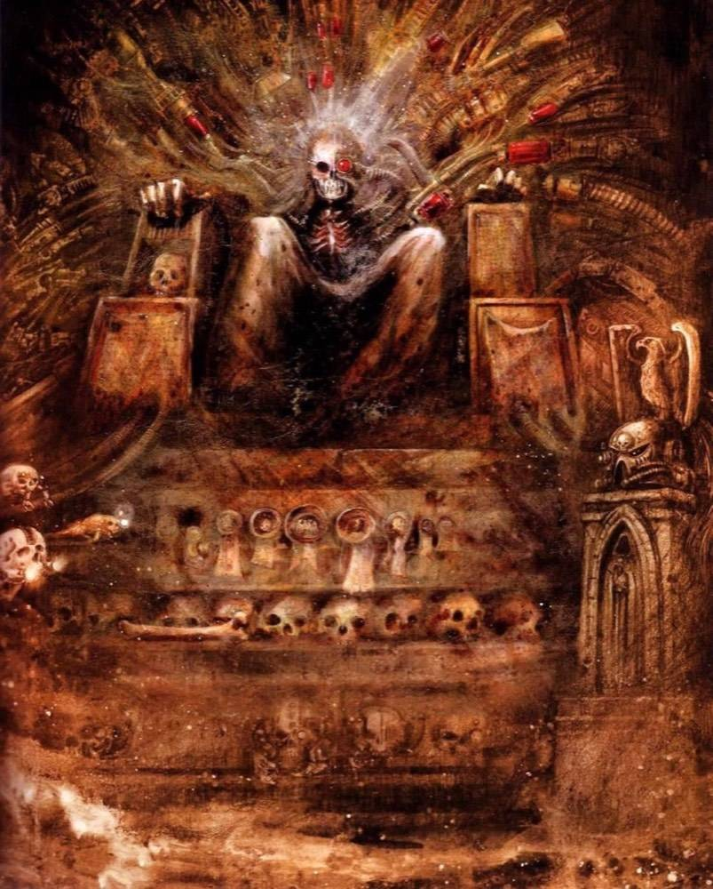

Main Page
Welcome to 40,000 Wiki,
the Imperial encyclopedia that any loyal citizen may read.
977 articles in English · Contents · Random article
From today's featured article

The Imperium of Mankind is the interstellar empire of humanity, ruled from Terra in the Emperor's name. Founded by the Emperor of Mankind at the end of the Age of Strife, it was forged in the Great Crusade and nearly destroyed in the Horus Heresy, after which the mortally wounded Emperor was interred on the Golden Throne. Ten thousand years later it spans over a million worlds, ruled in his name by the High Lords of Terra, worshipping him as a god and fighting for survival against Chaos, Orks, Tyranids and Necrons. Split in two by the Great Rift, it is now led by the resurrected primarch Roboute Guilliman in the Indomitus Crusade.
Did you know ...
- ... that the Emperor of Mankind has not issued a recorded command in over ten thousand years, yet every Imperial law is still written in his name?
- ... that the Astra Militarum was formed when Roboute Guilliman's reforms split the Imperial Army from the Imperial Navy after the Horus Heresy?
- ... that Cadia withstood twelve Black Crusades before falling to the thirteenth in 999.M41?
- ... that the records of the II Legion and XI Legion of the Astartes were expunged so thoroughly that even their primarchs' names are unknown?
- ... that the Adepta Sororitas exist because of a loophole: the Ecclesiarchy may not keep "men" under arms?
Start reading
- PortalsHeresy · Space Marines · Chaos · Mechanicus · Inquisition · Astra Militarum · Era Indomitus · Xenos · Geography · Timelines
- The ImperiumEmperor · Terra · High Lords
- Space MarinesUltramarines · Dark Angels · Blood Angels
- The HeresyHorus · Primarchs · Siege of Terra
- ChaosChaos Gods · Black Legion · Eye of Terror
- XenosAeldari · Orks · Necrons · Tyranids · T'au
- TimelineM1–M30 · M30 · M42
In the news

- The Indomitus Crusade continues under Roboute Guilliman as fleets push into the Imperium Nihilus.
- Lion El'Jonson, primarch of the Dark Angels, returns after ten thousand years.
- Hive Fleet Leviathan advances on the Imperium from below the galactic plane.
- The Necrons of the Pariah Nexus extinguish psychic life across the Nephilim Sector.
Ongoing: Plague Wars · Arks of Omen · Great Rift
From the archives
Events of the Imperial calendar
- c. 798.M30 – The Great Crusade begins.
- 005.M31 – Horus purges the loyalists of four Legions at Isstvan III, beginning the Horus Heresy.
- 014.M31 – The Siege of Terra ends; the Emperor is interred on the Golden Throne.
- 745.M41 – Hive Fleet Behemoth is defeated at the Battle of Macragge.
- 999.M41 – Cadia falls and the Great Rift opens.
Today's featured picture

Warships of the Imperial Navy in orbit above Holy Terra, the cradle of humanity and throneworld of the Imperium. Its surface is one continuous city, crowned by the Imperial Palace.
About this encyclopedia
40,000 Wiki collects the history, institutions and wars of the Imperium in one place, cross-linked and cited. Red links are articles not yet written. See About 40,000 Wiki.